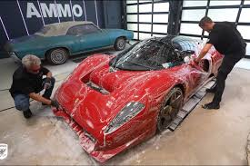
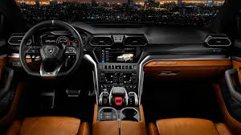
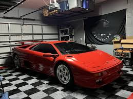
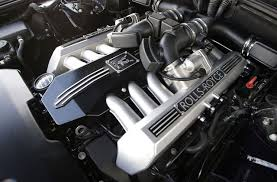

Lavado a mano personalizado
No se usa máquina de rodillos (que puede rayar la pintura)
Se lava completamente a mano con toallas de microfibra, jabones pH neutro y agua purificada.
Se secan los autos con toallas especiales para no dejar marcas de agua.
Precio Estimado del Servicio:
$10 USD

Detalle de Interiores de Alta Gama
Que incluye el servicio?
Limpieza de tapicería de cuero italiano o Alcantara con productos especiales que no dañan el material.
Hidratación de los asientos de cuero para evitar grietas.
Limpieza profunda de alfombras y paneles interiores.
Uso de aspiradoras especiales para no dañar cables o sensores internos.
Precio Estimado:
$150 USD

Pulido y encerado de protección
Que incluye el servicio?
Pulido profesional para quitar micro-rayones.
Aplicación de cera de carnauba premium o selladores cerámicos para proteger la pintura por meses.
Muchas veces aplican ceramic coating (recubrimiento cerámico) que hace que la pintura quede súper brillante y protegida contra rayos UV, lluvia ácida y suciedad.
Precio Estimado:
$80 USD

Limpieza de Motor
Que incluye el servicio?
Se limpian los motores sin presión de agua directa.
Solo se usan productos especializados para metales finos y plásticos de alta calidad.
Precio Estimado:
$1,000 - $1,400 USD
